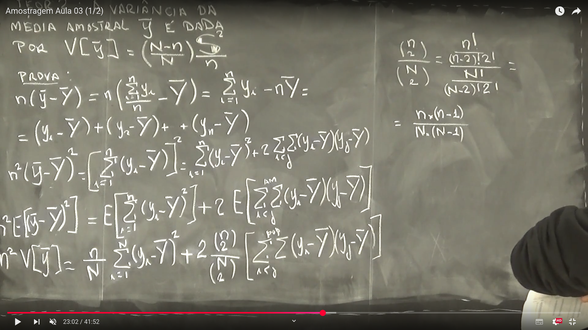
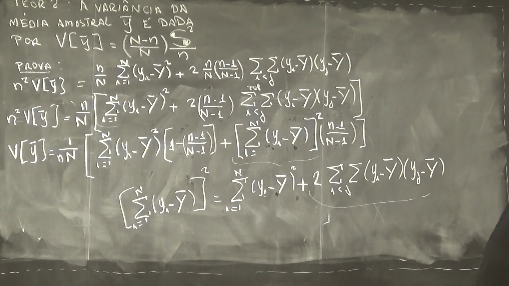
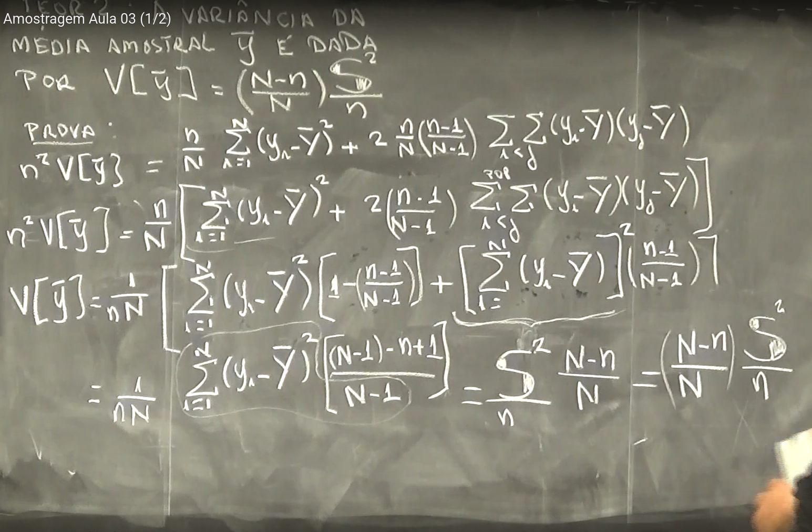
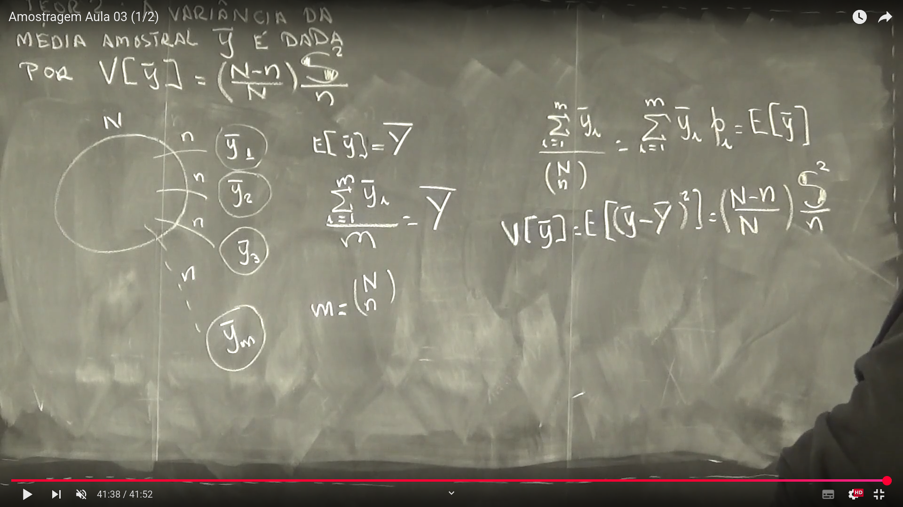
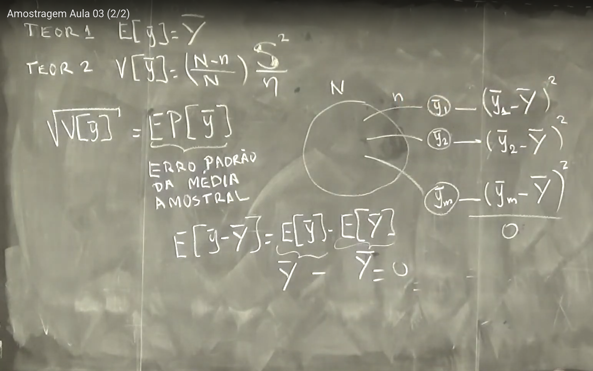
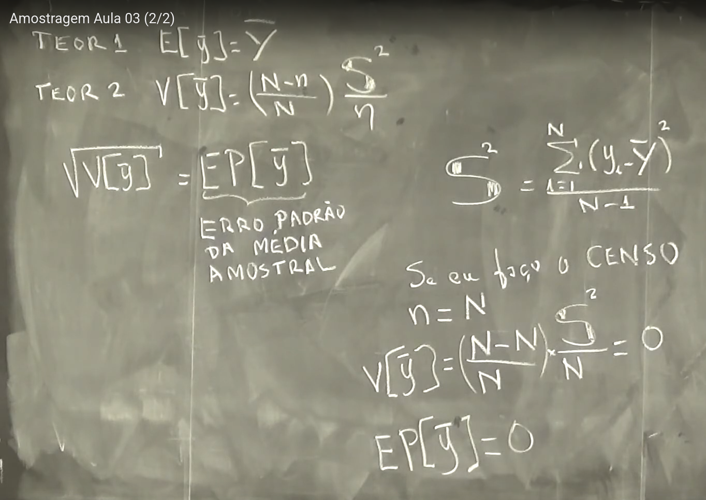
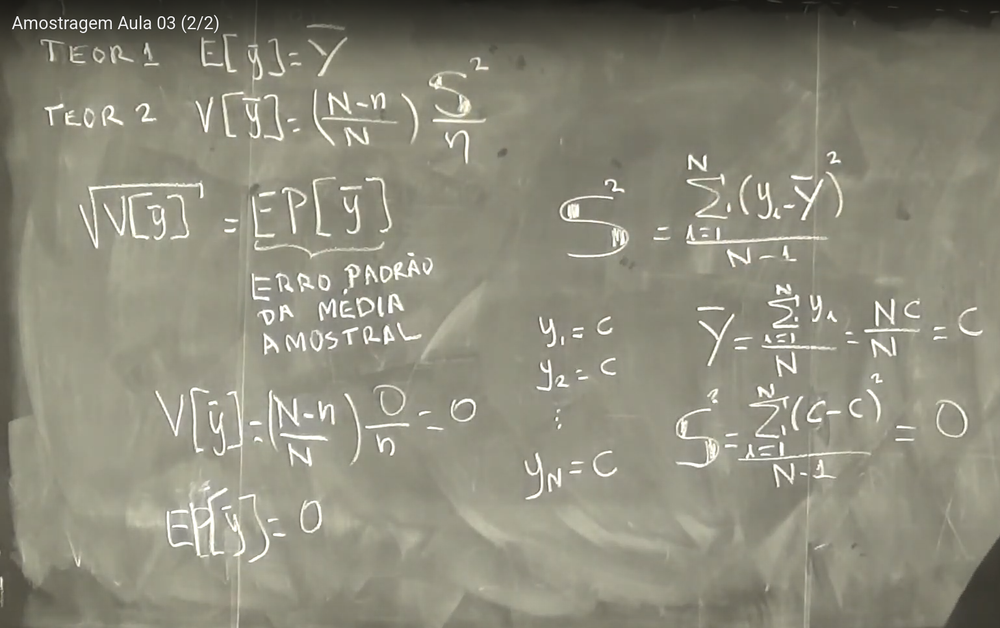

Semana 3
Semana 3
Aula 01: Valor Esperado de Estatísticas Amostrais
Nesta aula, estudamos como calcular o valor esperado (ou esperança matemática) de algumas estatísticas comuns obtidas a partir de amostras aleatórias simples (AAS). O objetivo é demonstrar que esses estimadores são não viesados, ou seja, sua esperança é igual ao parâmetro populacional.
1. Esperança da Média Amostral
Queremos calcular a esperança da média amostral \(\bar{y}\):
\[ E\left[\bar{y}\right] = E\left[ \frac{1}{n} \sum_{i=1}^{n} y_i \right] \]
Como estamos usando amostragem aleatória simples, todos os elementos têm a mesma chance de serem selecionados. Logo, temos:
\[ E\left[\bar{y}\right] = \frac{1}{N} \sum_{i=1}^{N} y_i = \bar{Y} \]
Conclusão: A média amostral \(\bar{y}\) é um estimador não viesado da média populacional \(\bar{Y}\).
2. Esperança da Soma dos Valores Amostrais
Queremos agora a esperança da soma dos elementos da amostra:
\[ E\left[\sum_{i=1}^{n} y_i\right] = \frac{n}{N} \left( \sum_{i=1}^{N} y_i \right) \]
- \(n\): número de parcelas da soma na amostra
- \(N\): número de parcelas da soma na população
Interpretação:
A soma esperada da amostra é proporcional à soma da população, com fator de expansão \(n/N\).
3. Esperança da Soma dos Quadrados
Agora, queremos a esperança da soma dos quadrados dos elementos da amostra:
\[ E\left[\sum_{i=1}^{n} y_i^2\right] = \frac{n}{N} \sum_{i=1}^{N} y_i^2 \]
Assim como no caso da soma simples, a soma dos quadrados também é proporcional à soma dos quadrados populacional, com o mesmo fator \(n/N\).
Resumo
| Estatística | Valor Esperado | Interpretação |
|---|---|---|
| Média amostral \(\bar{y}\) | \(\bar{Y}\) | Não viesada |
| Soma na amostra \(\sum y_i\) | \(\frac{n}{N} \sum Y_i\) | Proporcional à soma da população |
| Soma dos quadrados \(\sum y_i^2\) | \(\frac{n}{N} \sum Y_i^2\) | Proporcional à soma dos quadrados da população |
Cálculo da Variância das Observações na População
A variância populacional \(S^2\) mede a dispersão dos valores em relação à média da população \(\bar{Y}\). Existem diferentes formas algébricas para calcular essa variância, todas equivalentes.
Fórmula tradicional da variância populacional
A fórmula principal é:
\[ S^2 = \frac{1}{N - 1} \sum_{i=1}^{N} (y_i - \bar{Y})^2 \]
Forma equivalente usando a decomposição algébrica
Expandindo o quadrado da diferença, obtemos uma forma alternativa:
\[ S^2 = \frac{1}{N - 1} \left( \sum_{i=1}^{N} y_i^2 - \frac{\left( \sum_{i=1}^{N} y_i \right)^2}{N} \right) \]
Forma mais compacta com média
Lembrando que:
\[ \bar{Y} = \frac{1}{N} \sum_{i=1}^{N} y_i \]
Podemos reescrever a variância como:
\[ S^2 = \frac{1}{N - 1} \left( \sum_{i=1}^{N} y_i^2 - N \bar{Y}^2 \right) \]
Essa forma é útil quando já temos a média \(\bar{Y}\) e o somatório dos quadrados \(\sum y_i^2\).
Observação visual (imagem)
A imagem da lousa mostra essas três expressões de forma sequencial, reforçando a ideia de que todas são formas válidas de calcular a variância da população a partir dos dados.
Resumo
| Forma | Expressão |
|---|---|
| Forma 1 | \(S^2 = \frac{1}{N - 1} \sum (y_i - \bar{Y})^2\) |
| Forma 2 | \(S^2 = \frac{1}{N - 1} \left( \sum y_i^2 - \frac{(\sum y_i)^2}{N} \right)\) |
| Forma 3 | \(S^2 = \frac{1}{N - 1} \left( \sum y_i^2 - N \bar{Y}^2 \right)\) |
Essas fórmulas são a base para o desenvolvimento de estimadores da variância em amostras, que será aprofundado nas próximas aulas.
Teorema 2 — Variância da Média Amostral
A variância da média amostral \(\bar{y}\), obtida por amostragem aleatória simples sem reposição, é dada por:
\[ V(\bar{y}) = \left( \frac{N - n}{N} \right) \frac{S^2}{n} \]
- O fator \(\left( \frac{N - n}{N} \right)\) é chamado de fator de correção para população finita.
- Esse fator se aproxima de 1 quando \(N\) é muito grande em relação a \(n\), ou seja, quando a amostra é pequena comparada à população.
Demonstração
Começamos manipulando a definição da média amostral:
\[ n(\bar{y} - \bar{Y}) = n\left( \frac{1}{n} \sum_{i=1}^{n} y_i - \bar{Y} \right) = \sum_{i=1}^{n} y_i - n\bar{Y} \]
Expandindo a soma:
\[ = (y_1 - \bar{Y}) + (y_2 - \bar{Y}) + \cdots + (y_n - \bar{Y}) \]
Elevando ao quadrado:
\[ n^2 (\bar{y} - \bar{Y})^2 = \left( \sum_{i=1}^{n} (y_i - \bar{Y}) \right)^2 = \sum_{i=1}^{n} (y_i - \bar{Y})^2 + 2 \sum_{i<j} (y_i - \bar{Y})(y_j - \bar{Y}) \]
🔎 Explicação: Aqui usamos a identidade algébrica da expansão do quadrado da soma: \((a + b)^2 = a^2 + 2ab\) — no caso, aplicada a várias variáveis.
Aplicando o valor esperado:
\[ n^2 \mathbb{E}\left[ (\bar{y} - \bar{Y})^2 \right] = \mathbb{E} \left[ \sum_{i=1}^{n} (y_i - \bar{Y})^2 \right] + 2 \mathbb{E} \left[ \sum_{i<j}^{\text{amostra}} (y_i - \bar{Y})(y_j - \bar{Y}) \right] \]
Sabemos que:
\[ \mathbb{E} \left[ \sum_{i=1}^{n} (y_i - \bar{Y})^2 \right] = \frac{n}{N} \sum_{i=1}^{N} (y_i - \bar{Y})^2 \]
E também:
\[ \mathbb{E} \left[ \sum_{i<j}^{\text{amostra}} (y_i - \bar{Y})(y_j - \bar{Y}) \right] = \frac{\binom{n}{2}}{\binom{N}{2}} \sum_{i<j}^{\text{população}} (y_i - \bar{Y})(y_j - \bar{Y}) \]
Intuição: A covariância entre dois elementos distintos da amostra é negativa quando a amostragem é sem reposição. Esse segundo termo da soma traz esse ajuste.
Cálculo dos coeficientes combinatórios:
\[ \frac{\binom{n}{2}}{\binom{N}{2}} = \frac{n(n - 1)}{N(N - 1)} \]
Substituindo tudo:
\[ n^2 V(\bar{y}) = \frac{n}{N} \sum_{i=1}^{N} (y_i - \bar{Y})^2 + 2 \cdot \frac{n(n - 1)}{N(N - 1)} \sum_{i<j}^{\text{população}} (y_i - \bar{Y})(y_j - \bar{Y}) \]
Observações Algébricas
Vamos aplicar a identidade:
\[ \sum_{i<j} (y_i - \bar{Y})(y_j - \bar{Y}) = \frac{1}{2} \left[ \left( \sum_{i=1}^{N} (y_i - \bar{Y}) \right)^2 - \sum_{i=1}^{N} (y_i - \bar{Y})^2 \right] \]
Como:
\[ \sum_{i=1}^{N} (y_i - \bar{Y}) = 0 \Rightarrow \left( \sum_{i=1}^{N} (y_i - \bar{Y}) \right)^2 = 0 \]
Então:
\[ \sum_{i<j} (y_i - \bar{Y})(y_j - \bar{Y}) = -\frac{1}{2} \sum_{i=1}^{N} (y_i - \bar{Y})^2 \]
Substituindo isso:
\[ n^2 V(\bar{y}) = \left( \frac{n}{N} - \frac{n(n - 1)}{N(N - 1)} \right) \sum_{i=1}^{N} (y_i - \bar{Y})^2 \]
Simplificando:
\[ V(\bar{y}) = \frac{1}{nN} \sum_{i=1}^{N} (y_i - \bar{Y})^2 \left( \frac{N - n}{N - 1} \right) \]
E substituímos a soma pelo valor equivalente da variância:
\[ \sum_{i=1}^{N} (y_i - \bar{Y})^2 = (N - 1) S^2 \]
Portanto:
\[ V(\bar{y}) = \frac{1}{nN} \cdot (N - 1) S^2 \cdot \frac{N - n}{N - 1} \]
Cancelando:
\[ V(\bar{y}) = \left( \frac{N - n}{N} \right) \cdot \frac{S^2}{n} \]
Explicação Intuitiva
- Quando n aumenta, o fator \(\frac{N - n}{N}\) diminui, ou seja, a variância da média amostral fica menor — intuitivamente, quanto maior a amostra, mais preciso o estimador.
- O termo \(S^2\) é a variância da população: quanto mais dispersos os dados, maior será a variância da média amostral.
- O denominador \(n\) mostra que estamos dividindo a dispersão total entre os \(n\) elementos da amostra — exatamente o esperado para uma média.
Resumo da Prova do Teorema 2
- Passo 1: Expandimos \(n^2(\bar{y} - \bar{Y})^2\) para obter soma de quadrados e produto cruzado.
- Passo 2: Aplicamos o valor esperado em cada parte, separadamente.
- Passo 3: Usamos identidades de somatórios e combinatórias para expressar tudo em termos da variância populacional.
- Passo 4: Substituímos \(\sum (y_i - \bar{Y})^2 = (N - 1)S^2\).
- Conclusão: Obtemos a fórmula final:
\[ V(\bar{y}) = \left( \frac{N - n}{N} \right) \cdot \frac{S^2}{n} \]
Conclusão
- A variância da média amostral \(\bar{y}\) diminui à medida que a amostra cresce (\(n\) aumenta).
- A presença do fator \(\frac{N - n}{N}\) mostra que quanto menor a amostra em relação à população, maior a variância esperada da média.
- Esse resultado é crucial para dimensionar o tamanho amostral em estudos estatísticos.
Observação Final
A figura complementar da lousa mostra o universo das possíveis amostras \(\bar{y}_1, \bar{y}_2, \dots, \bar{y}_m\) e como todas têm o mesmo peso na esperança da média, reforçando que \(\mathbb{E}[\bar{y}] = \bar{Y}\) e que a variância de \(\bar{y}\) depende da dispersão dos dados na população (\(S^2\)) e do tamanho amostral.
Representação Ilustrativa: 



Aula 02 - Introdução ao Erro Padrão da Média (Desvio Padrão da Média)
Teorema 1
A esperança da média amostral \(\bar{y}\) é igual à média populacional \(\bar{Y}\):
\[ \mathbb{E}[\bar{y}] = \bar{Y} \]
Teorema 2
A variância da média amostral, em amostragem sem reposição, é dada por:
\[ V(\bar{y}) = \left( \frac{N - n}{N} \right) \cdot \frac{S^2}{n} \]
Erro Padrão da Média Amostral
A raiz quadrada da variância da média amostral define o Erro Padrão da Média Amostral:
\[ EP(\bar{y}) = \sqrt{V(\bar{y})} \]
Este valor indica o desvio esperado da média amostral em relação à média populacional. Em outras palavras, o erro padrão da média mede a variabilidade entre as médias amostrais ao se repetir a amostragem várias vezes.
Interpretação Intuitiva
Imagine todas as possíveis amostras de tamanho \(n\) retiradas de uma população de tamanho \(N\). Cada amostra produzirá uma média \(\bar{y}_1, \bar{y}_2, \dots, \bar{y}_m\).
A variância entre essas médias é exatamente \(V(\bar{y})\), e sua raiz quadrada é o erro padrão.
Assim:
- A esperança de cada \(\bar{y}_k\) é igual a \(\bar{Y}\).
- A média das diferenças \((\bar{y}_k - \bar{Y})\) é zero.
- A variância das médias amostrais mede o quão espalhadas elas estão em torno de \(\bar{Y}\).
Propriedade Importante: Soma dos Desvios
Sabemos que a soma dos desvios em relação à média populacional é zero:
\[ \sum_{i=1}^{N} (y_i - \bar{Y}) = 0 \]
Logo, ao fazer:
\[ \sum_{k=1}^{m} (\bar{y}_k - \bar{Y}) = 0 \]
A soma dos quadrados dos desvios é o que contribui para a variância:
\[ V(\bar{y}) = \mathbb{E} \left[ (\bar{y} - \bar{Y})^2 \right] \]
Caso Especial: Censo
Se fizermos um censo, ou seja, \(n = N\), então:
\[ V(\bar{y}) = \left( \frac{N - N}{N} \right) \cdot \frac{S^2}{N} = 0 \]
Neste caso:
- Não há erro de estimação.
- O erro padrão da média amostral é:
\[ EP(\bar{y}) = 0 \]
A variabilidade desaparece, pois temos a informação completa da população.
Fórmula da Variância Populacional
A variância populacional \(S^2\) é dada por:
\[ S^2 = \frac{1}{N - 1} \sum_{i=1}^{N} (y_i - \bar{Y})^2 \]
É esse valor que aparece na fórmula de \(V(\bar{y})\), multiplicado pelo fator de correção finita \(\frac{N - n}{N}\) e dividido pelo tamanho da amostra \(n\).
Conclusão
- O erro padrão da média expressa a precisão da média amostral como estimador de \(\bar{Y}\).
- Quanto maior a amostra (\(n\)), menor o erro padrão.
- Se \(n = N\), o erro é zero (cenário de censo).
Quadro da aula:
Parte 1: 
Parte 2: 
Parte 3: 